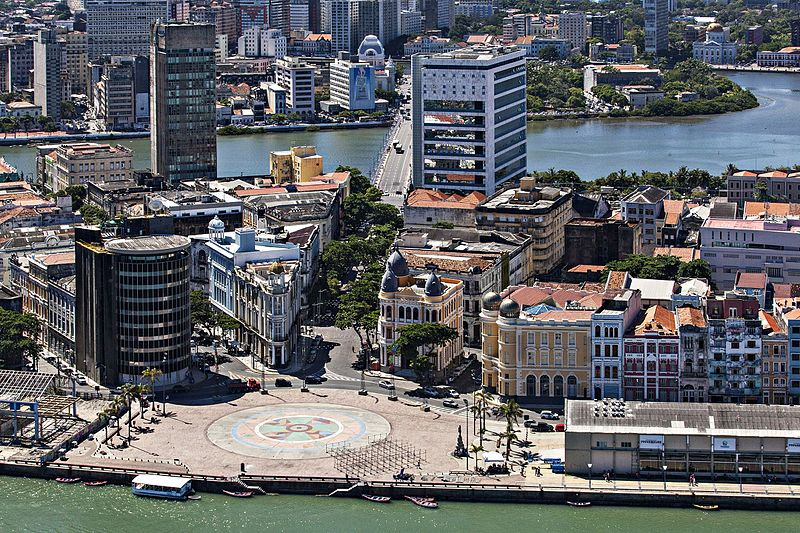
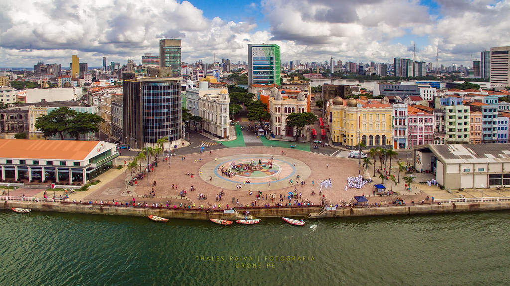

Home
Informações
contato
Outros Pontos Turísticos

Marco Zero - Recife - Pernambuco
Informações

Praça Rio Branco
Localização
Tipo
Administração
Bairro do Recife, Recife
Pública
Prefeitura de Refice